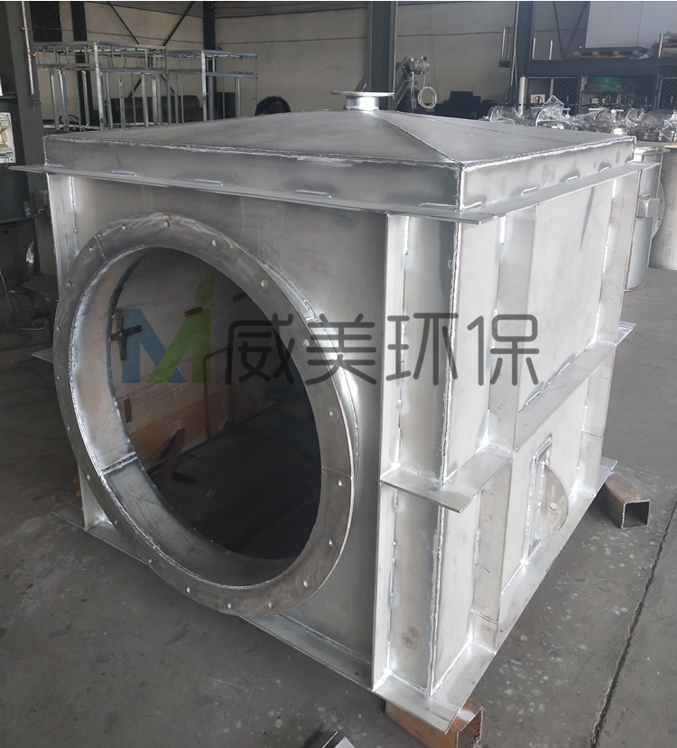
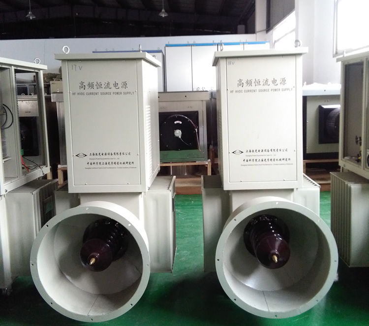
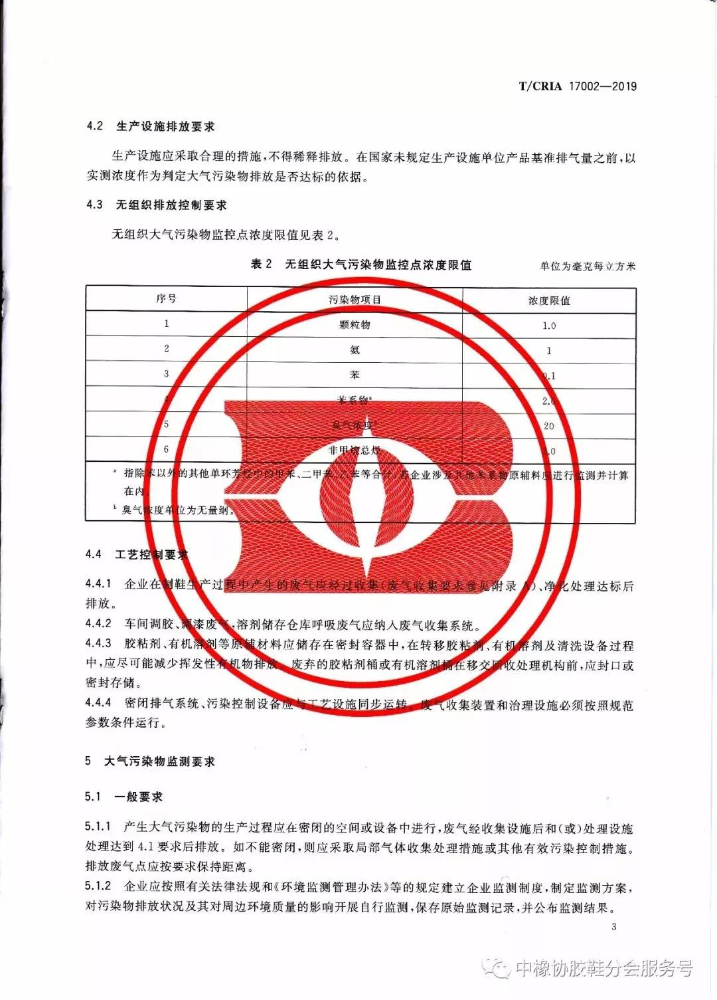
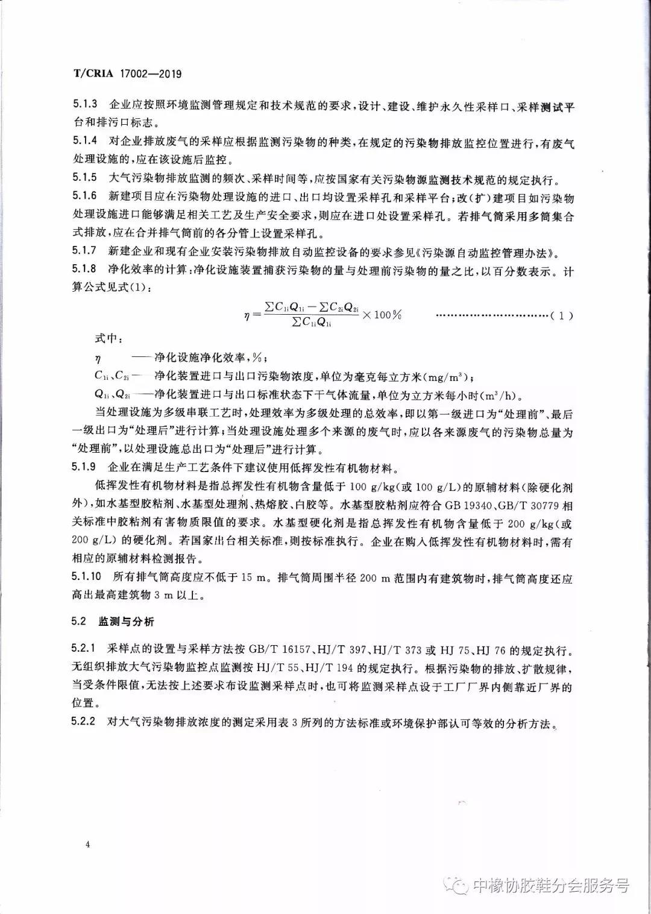
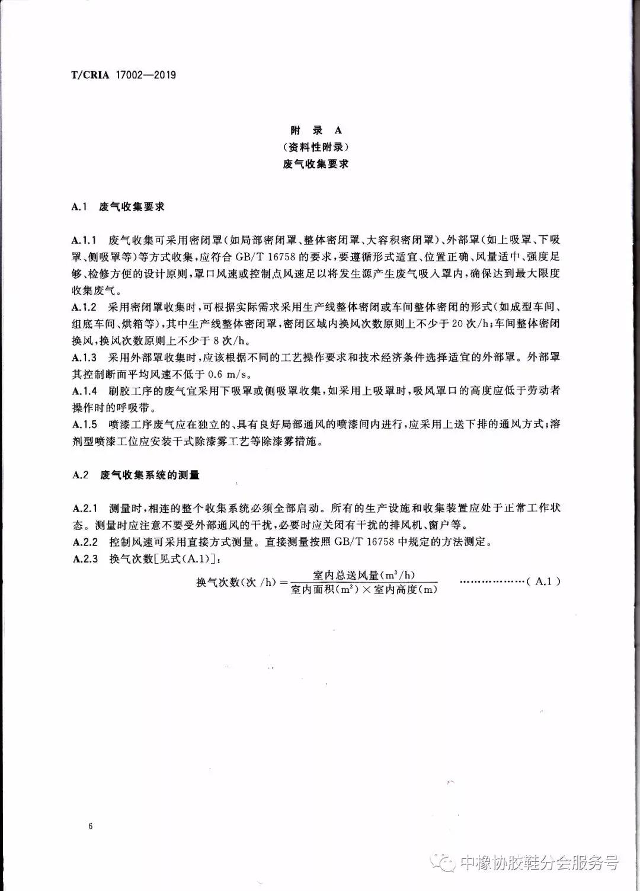
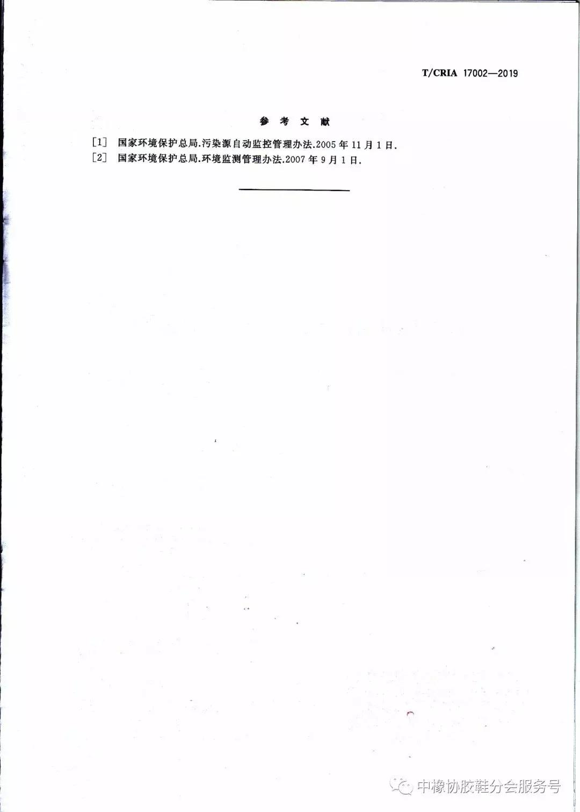

江西华邦复合材料有限公司专业从事电除雾器、湿式电除尘器及阳极管等除尘设备的研发生产
 13870005775
1387000577513870005775
邮箱：jiangxihb@163.com东部地区某1000MW燃煤机组配套建设湿式电除尘器装置，通过对系统启动调试过程中水循环系统投运、空载升压及喷淋雾化试验的合理控制，来提高系统运行稳定性。有效解决了湿法脱硫石膏雨问题，提高了除尘效率。
近年来，雾霾现象引起了人们对大气污染的广泛关注。燃煤电厂是我国大气污染的主要来源之一，2014年9月，国家发改委等三部委联合发布了关于印发《煤电节能减排升级与改造行动计划（2014-2020年）》的通知。通知中要求，2020年，东部地区现役30万千瓦及以上公用燃煤发电机组、10万千瓦及以上自备燃煤发电机组及其他有条件的燃煤发电机组达到烟尘排放限值10mg/m3。排放标准的进一步提高，对东部经济发达地区燃煤电厂污染物控制的要求也日趋严格。
目前，国内大部分大型机组燃煤电厂均装有湿法脱硫设施，而湿法脱硫会导致烟气温度降低和湿度加大。当烟温降低时，烟气中的SO3和硫酸分子会形成气溶胶颗粒，加重雾霾现象；湿度加大则会导致烟气携带过多液滴，从而造成石膏浆液的逃逸，形成石膏雨、酸雨等现象。
湿式静电除尘器技术（简称WESP），是一种高效的污染物终端处理技术，可以有效降低烟尘浓度，并同时解决硫酸气溶胶、石膏雨、重金属污染等问题[2]。因此，近年来在湿法脱硫后加装湿电除尘器装置成为一种趋势。
1原理
湿式电除尘器是将水雾直接喷向电极和电晕区，水雾在电极形成的电场内荷电并进一步雾化，粉尘颗粒和雾滴颗粒最终在电场力的驱动下到达集尘极而被捕集。干式电除尘器是通过振打清灰的方式将极板上的粉尘去除，而湿式电除尘器是将水喷至集尘极上形成连续的水膜，通过流动水膜将捕获的粉尘冲刷到灰斗中随水排出。尽管湿式电除尘的类型和结构很多，但基本原理相同，都是用电除尘的方法分离气体中的气溶胶和悬浮尘粒，主要包括以下四个复杂而又相互有关的物理过程：
气体的电离——粉尘与雾滴荷电——荷电粒子向电极运动——水膜冲刷极板清灰。
2系统启动调试
2.1分系统调试
（1）阀门传动试验。对湿式电除尘器水系统的电动阀门进行传动验收并做好记录。
（2）热工测点及CEMS测点校对。对各系统的温度、压力、流量、液位等热工测点及量程进行校对，并配合CEMS厂家进行烟囱排口CEMS调试，完成NO、SO2、烟尘、O2、烟气流速、湿度、温度、压力等仪表测点及量程静态校对。
（3）热风吹扫系统试运。检查风机、电加热器及管路系统检查，确保具备试运条件后，分别试运加热风机。风机运行正常状态下，投运风机出口电加热器，电加热器出口温度设定为80℃，两台电加热器出口温度分别能达到为79.1℃、77.7℃，满足设计要求。
（4）保温箱加热系统调试。在手动位投运8台保温箱加热器，温度显示正常后，将主令开关打至自动位，并设定温度55±5℃，投运后保温箱温度为52～56℃，能达到设定温度值。当保温箱内部湿度较大时应采取边加热边通风的措施（打开保温箱人孔门）以驱除箱内湿气。
（5）泵设备试运。按步骤分别试运补给水泵、过滤水泵、循环水泵、增压水泵、卸碱泵及加碱泵，确保水系统平衡，保证补给水泵和循环水泵出口压力达到0.35-0.45MPa、过滤水泵和增压水泵压力达到0.2-0.3MPa。
泵设备稳定运行后，补给水泵在频率71%时，水泵转速2155rpm，电流20.42A，出口压力0.437MPa；过滤水泵在频率70%时，转速2035rpm，电流35.23A，出口压力0.276MPa；循环水泵在频率68%时，转速2024rpm，电流16.60A，出口压力0.407MPa；增压水泵在频率60%时，转速1808rpm，电流24.32A，出口压力0.263MPa；各项参数满足要求。卸碱泵和加碱泵试运期间电流、温度、振动等各项参数满足要求，加碱泵变频调节良好。
（6）喷淋系统调试。投运湿式电除尘器补给水泵、循环水泵，进行水系统管路冲洗，检查各支管出口有无堵塞，确认冲洗干净后装入喷嘴，随后进行冲洗喷淋、雾化试验。冲洗时水泵出口压力达到0.4MPa，喷淋、雾化效果满足要求。
（7）联锁保护试验。根据厂家设计逻辑和定值进行湿除系统相关联锁、保护、顺控试验，要求在液位低于定值时，泵设备自动跳闸。
（8）高频电源空载升压试验。配合湿除厂家分别进行干态、湿态条件下高频电源空载升压试验，重点进行绝缘措施检查，防止出现人员伤亡。
2.2整套启动调试
（1）湿式除尘器系统启动前试运检查及安全技术交底。热态投运前组织参建单位对湿除系统进行完整性及合理性检查、启动条件的确认及进行安全技术交底。
（2）热态投运。湿除系统在锅炉点火系统停投大油枪后即可投入，启动热风吹扫系统及保温箱电加热器，八台保温箱内温度控制在50～60℃之间。投运自清洗过滤器，分别启动补给水泵、过滤水泵、增压水泵和循环水泵，出口压力分别控制在0.40MPa、0.23MPa、0.28MPa和0.41MPa，随后投入压力自动。水系统投运期间应注意观察各出口水泵出口压力变化，因压力骤变会影响水量，从而导致喷淋效果不佳，高频电源放电效果亦会受影响。发现水泵出口压力变大时，应及时清理出口滤网，防止堵塞。
水系统稳定运行后，投运高频电源，电流极限设置为30%，湿除进入热态运行。湿除投运后烟囱排口烟尘浓度由0.94mg/Nm3降至0.51mg/Nm3。根据出口粉尘浓度值，将高频电源电流极限设置为50%，烟囱排口烟尘浓度降至0.30mg/Nm3，达到设计目标。
（3）电流极限值与除尘效率的关系。在500MW稳定工况下进行了高频电源电流极限值与除尘效率关系试验，试验过程中，水系统出口压力稳定，烟温正常，进口烟尘浓度稳定在0.94mg/Nm3，双室八電场皆投入，二次电流及二次电压峰值未出现跳变。表1反映了电流极限值与除尘效率的关系。
由表1可看出，在工况稳定，高频电源运行正常的情况下，除尘效率总体随电流极限值的增大而升高，呈正相关的关系。由于系统后台无伏安特性曲线，无法分析二次电压、二次电流、电流极限等参数与除尘效率之间的函数关系，而电流极限依据出口烟尘浓度来粗略调节，因此仅提供一组运行数据供参考。
（4）168h满负荷试运行。在完成热态调试后，湿式电除尘器与1号机组同步进入168h满负荷试运行，试运行期间，湿除系统运行稳定，各项参数正常。
3结语
随着我国粉尘污染物排放的控制法规的不断出台，标准也逐步提高，因此，在燃煤电厂中应用湿式电除尘器将成为趋势。调试过程中应注意水系统的稳定运行，从而保证喷淋效果，并对高频电源设定合理的参数，保证除尘率的同时减少耗电量，达到环保与节能的共存。
来源:科技视界 邱勇军
声明：转载此文是出于传递更多信息之目的。若有来源标注错误或侵犯了您的合法权益，请作者持权属证明与本网联系，我们将及时更正、删除，谢谢。

2018年12月29日，中华人民共和国主席令第二十四号正式签发，《全国人民代表大会常务委员会关于修改<中华人民共和国劳动法>等七部法律的决定》已由中华人民共和国第十三届全国人民代表大会常务委员会第七次会议通过，自公布之日起施行。全国人大对《中华人民共和国环境影响评价法》做出修改，标志着“环评机构资质”正式取消！也标志着我国正在进入新的环评时代。
主要内容：
将第六条第二款、第九条等条中的“环境保护行政主管部门”修改为“生态环境主管部门”；
将第十九条修改为：建设单位可以委托技术单位对其建设项目开展环境影响评价，编制建设项目环境影响报告书、环境影响报告表；建设单位具备环境影响评价技术能力的，可以自行对其建设项目开展环境影响评价，编制建设项目环境影响报告书、环境影响报告表；
将第二十条修改为：建设单位应当对建设项目环境影响报告书、环境影响报告表的内容和结论负责。
这是否意味着，环评管理放松了，任何企业、机构都可以从事环评工作呢？
事情并非如此。
更严厉的行业管理顶层设计正在展开
《每日经济新闻》记者独家获悉，新的更加严厉的环评行业管理顶层设计正在展开。
一位知情人士告诉《每日经济新闻》记者，在新环评法实施前夕，环境部曾在2018年12月18日召开过一次会议，讨论环评资质取消后环评行业的规范管理工作。
同时，环境部发布了《建设项目环境影响报告书(表)编制能力建设指南》、《建设项目环境影响报告书(表)编制失信行为记分办法》、《建设项目环境影响报告书(表)编制监督管理办法》三个征求意见稿，目前正在征求意见中。
《管理办法》编制说明显示，资质取消后，将不再对环境影响报告书(表)编制单位设置准入门槛，具备技术能力的建设单位或其委托的技术机构均可编制。为保证资质取消后环评文件质量不下降、环评预防环境污染和生态破坏的作用不降低，有必要根据新形势新要求改革现有制度体系，并制定相应管理办法。
四类单位不得编制环境影响报告书
《每日经济新闻》记者注意到，《管理办法》在“编制单位限制”中要求，接受委托为建设单位编制环境影响报告书(表)的技术单位应当为依法经登记的企业法人或者核工业、航空和航天行业的事业单位法人。自行编制的建设单位应当具备独立法人资格。编制单位不得与负责审批环境影响报告书(表)的生态环境主管部门或者其他有关审批部门存在任何利益关系。
同时，《管理办法》规定了四类单位不得编制环境影响报告书(表)：由负责审批环境影响报告书(表)的主管部门设立的事业单位出资的企业法人；由负责审批环境影响报告书(表)的主管部门作为业务主管单位或者挂靠单位的社会组织出资的企业法人；受负责审批环境影响报告书(表)的主管部门委托，开展环境影响报告书(表)技术评估的企业法人；前三项中的企业法人出资的企业法人。
而编制人员则需要满足两个条件之一，分别为：具备环境影响评价工程师职业资格；具备研究或者工程系列高级专业技术职称满5年且环境影响评价工作经历满10年。
构成犯罪行为的可终身禁入
除对编制单位和编制人员的要求，《管理办法》中对“违法情形”进行了非常严格的规定，并制定了严厉的惩处措施。
违法行为包括六大类：重要环境保护目标、主要环境质量现状监测数据等基础材料数据明显不实的；主要污染源源强核算、主要评价因子和重要环境保护目标环境影响预测等内容存在明显错误或者虚假的；未提出必要措施预防和控制环境污染、生态破坏或环境风险，或者提出的污染防治措施不能使污染物排放达到国家和地方排放标准的；未针对改建、扩建和技术改造项目原有环境污染和生态破坏提出有效防治措施的；建设项目类型及其选址、布局、规模等明显不符合环境保护法律法规和相关法定规划，但给出环境可行结论的；本办法第十七条规定情形，或者内容存在其他重大缺陷、遗漏、虚假，致使建设项目选址、选线不当，环境影响评价结论错误或者致使建设项目产生严重环境污染或者生态破坏的。
《管理办法》第十七条还列出了环境保护目标遗漏或者描述失实；环境影响评价工作等级或者环境标准适用错误等11种通报批评情形。
《管理办法》规定，存在上述六种严重质量问题之一的，由市级以上生态环境主管部门对建设单位处50万元以上200万元以下的罚款，并对建设单位的法定代表人、主要负责人、直接负责的主管人员、编制人员或者其他责任人员，处5万元以上20万元以下的罚款；对负有责任的技术单位处所收费用三倍以上五倍以下的罚款，技术单位五年内不得从事环境影响报告书(表)编制工作，情节严重的，禁止从事环境影响报告书(表)编制工作，有违法所得的，没收违法所得；环境影响报告书(表)的编制主持人员和主要编制人员五年内不得从事环境影响报告书(表)编制工作，构成犯罪的，终身禁止从事环境影响报告书(表)编制工作。
建立环境影响评价失信“黑名单”
《管理办法》还提出生态环境主管部门对建设单位、技术单位、编制人员(以下简称信用管理对象)实施环境影响评价信用管理，并将失信行为和失信记分及时记录在信用平台，向社会公开。
信用管理对象在一个自然年内累计失信记分达到限制分数的，生态环境部将其列入环境影响评价失信“黑名单”。
《记分办法》中规定的限制分数为年度累计失信记分20分。
《记分办法》显示，失信记分在3、5、7、20分不等，公开信息或接受监督检查中有弄虚作假行为将被直接记20分。
江西华邦复合材料有限公司专业从事烟气深度治理设备的研发制造，产品主要有阳极管、电除雾器、湿式静电除尘器、脱硫除尘器等烟气净化设备。现在来讲讲电除雾器维护注意事项
(1)电除雾器收尘室
除尘装置中气体温度在露点以下会引起化学腐蚀，由于H20—H2SO4冷凝而引起绝缘物表面上漏电，或在电极线上黏附粉尘，或者生成绝缘性的覆盖膜，所以应该经常使气体温度保持在露点以上。另一方面也要注意在500℃以上的高温下， 由于构件的热应力而产生的故障。一般来说，希望在比含S02、SO3的混合气体的露点高50℃左右的温度下操作。
对于电除雾器，为防止效率降低，希望在40℃以下的条件下进行运转。

电除雾器收尘室
(2)电除雾器电源设备
为使电除雾器高效运转，希望经常加上尽可能高的电压。所以，对导电部分和大地的绝缘，支承物的构造，以及材料等应当予以特别注意。如有水分、粉尘附着在绝缘瓷瓶表面上，或混入电除雾器的绝缘油中，电气绝缘就会显著恶化，使有效电压降低。经过彻底清扫的绝缘瓷瓶用1000V兆欧计测量其绝缘电阻大致上是无限大，至少应以20Mn以上作为基准。绝缘瓷瓶应该根据使用状况、环境来决定其定期清扫周期。此外，应把绝缘瓷瓶放在箱内并送入热风以免受到湿气体和粉尘的影响。
晶闸管整流的场合，温度对其工作特性和寿命有影响，所以有必要注意晶闸管周围温度的上升情况。晶闸管整流器收藏在贮槽内，由于经常受绝缘油等的冷却，所以没有温度上升的问题，但是要注意吸湿呼吸器等的污染。如果吸湿呼吸器受到污染，水分等进入贮槽的绝缘油中，往往会引起绝缘恶化。

(3)电除雾器酸雾的排出
对电除雾器来说，捕集下来的酸雾是从室内下部向室外作为排放液逐渐排出。由于排放液中的金属化合物等会堵塞排出管，引起进气室内积酸而招致气体阻力增大，所以需要加以注意。
(4)电除雾器除雾室的清扫
除雾室长期运转后，除尘效率逐渐降低。所以必须在适当的时期打开清扫。定期清扫的周期根据矿的品种、焙烧炉形式、操作状态等决定。

(5)电除雾器放电电极（阴极线）的更换
电除雾器的放电电极由于粉尘的粘附、绝缘皮膜的形成以及腐蚀、安装质量不好而引起断线，或者由于不可能纠正的弯曲等原因需要予以更换。使用硫磺矿及锌矿时，放电电极往往有形成绝缘皮膜的现象。一般是1～5年全部更换一次。除雾装置放电电极更换的理由大致上也与除尘装置相同星型突出部分破损厉害时也需要更换。

(6)电除雾器绝缘瓷瓶
绝缘瓷瓶的破坏、龟裂是经常发生的，这会招致不能外加高电压或不能送电。其原因如下。
冷凝漏电：由于收尘室在运转中温度降低，水蒸气在表面上冷凝，往往发生漏电，所以必须在适当的温度下(出口300℃)运转。安装作业中的破坏：安装作业要谨慎，必须注意不要碰撞或安装不合适。
(7)电除雾器油封用绝缘油
电除雾器使用油封时，绝缘油直接与外面气体、炉气接触、所以尘埃、酸雾、水分等进入而使绝缘变得非常不好。由于液面放电或悬浮尘埃的电桥闪络而不能施加高的电压，进而还会发生火灾放电，并有可能发生火灾，所以应该尽量使用绝缘良好的绝缘油。另外，必须定期进行绝缘耐力试验及除去混入水分的作业。长期使用后的绝缘油由于绝缘能力恶化，1～2年需要更换再生一次。
“颗粒物5.1毫克/立方米、二氧化硫3.04毫克/立方米、氮氧化物30.5毫克/立方米……”记者近日在江西省邯郸市新兴铸管股份有限公司采访时看到，企业3#90平方米烧结机烟气实时监测数据中，颗粒物、二氧化硫排放数据保持在个位数波动。
新兴铸管股份有限公司环保能源部部长辛景昌告诉记者：“去年9月底，我们完成了超低排放改造，运行半年来，烧结机颗粒物、二氧化硫、氮氧化物排放浓度值能够稳定优于江西省钢铁行业10毫克/立方米、35毫克/立方米、50毫克/立方米的超低排放标准，这一标准为国内外现行标准最严水平。”
据了解，作为钢铁大省，江西把钢铁行业超低排放改造作为打赢蓝天保卫战的重要举措，对标世界一流标准，在国内率先开展了超低排放改造。自2018年起，已累计投入资金128.83亿元，分3年谋划实施359个钢铁行业超低排放改造项目，截至目前已实施改造306个，完成了228个。
提标改造这道坎迟早要过
全省2020年执行新标，但多数企业选择提前治理、提前达标
“我们公司现有3台烧结机，其中两台90平方米、1台200平方米，全部完成了超低排放改造。”辛景昌向记者介绍说，邯郸市政府要求2019年完成所有烧结机超低排放改造任务，新兴铸管将这一提标改造任务提前到了2018年底完成。
据了解，江西省《钢铁工业大气污染物超低排放标准》明确提出，现有企业自2020年10月1日起执行新标准。但面对超低排放改造的大势所趋，江西省多数钢铁企业选择了主动加压，提前治理，提前达标。
“德龙钢铁自2016年下半年起就开始实施超低排放改造，截至去年10月，公司累计投入资金7.8亿元，完成了烧结、炼铁、炼钢等全部工序以及无组织排放的超低排放改造。”邢台市德龙钢铁有限公司环保部部长杨晓斌介绍说。
“马鞍子比马贵。”提起此次改造，辛景昌感叹，新兴铸管每台烧结机投资才1亿元，而超低排放改造设施每套近两亿元，全部算下来投资超过5亿元。但辛景昌也表示，打好污染防治攻坚战，企业应该承担起治污的主体责任。“这道坎迟早要过，晚做不如早做，凑合做不如做好，选最好的技术，达到最高的排放水平，企业才能走得更长远。”
记者采访中了解到，钢铁行业超低排放改造的一个难点是烧结机的烟气脱硝，目前市场上脱硝技术较多，活性炭、活性焦脱硝技术运行较为稳定，但投入也更大。
新兴铸管炼铁部环保总工高广维介绍说，“有一种石灰石膏法＋SCR的脱硝技术，成本仅是活性焦脱硫脱硝脱二噁英技术路线的一半，但治理效果没有后者好。权衡再三，我们最后选择了治理效果较好的活性焦技术。”
好的技术改造成本相对较高，杨晓斌也向记者表示：“以我们在建的230平方米烧结机为例，这套设备总造价5.5亿元，烧结机本身造价3亿元左右，配套的活性炭脱硝超低排放治理设施造价约2.5亿元，这还不包括后续的运维费用。”
企业之所以不惜投入大量资金选择好的技术，主要是江西省的超低排放标准对后期稳定达标运行提出了更高的要求。江西省众联能源环保科技有限公司专家张仲成是江西省《钢铁工业大气污染物超低排放标准》的主要起草人之一，他介绍说：“标准有个前置条件，即烧结机头、球团焙烧设备烟气在基准含氧量16%条件下，达到相关排放标准。这个要求既防范了企业通过稀释烟气浓度来达标，也对后期稳定达标运行提出了更高要求。”
无组织排放管控加严
钢铁企业全工艺流程管控无组织排放，推动精细化管理
事实上，江西省钢铁行业超低排放改造还不仅仅是有组织排放口的改造，按照标准要求，无组织排放的管控也大幅收严。
张仲成介绍说：“江西省《钢铁工业大气污染物超低排放标准》增加了无组织排放浓度限值，明确了有厂房车间、无完整厂房车间的颗粒物浓度限值，规定了厂界苯、甲苯、二甲苯、非甲烷总烃等无组织排放浓度限值。”
要达到这一标准，意味着钢铁企业要对物料（含废渣）运输、装卸、储存、转移、输送以及生产工艺全过程，全面增加颗粒物无组织排放控制措施。
杨晓斌向记者介绍说，“在无组织排放治理上，德龙钢铁累计投资3亿元左右，建起了5个大棚，实现了原料、物料、燃料等仓化储存；此外，在物料的运输中全部采用密闭皮带运输，取消了厂区内汽车倒运环节，减少了无组织排放。”
河钢邯钢是国内首家应用活性炭脱硫脱硝工艺完成烧结机烟气治理的企业，也是邯郸市率先完成超低排放改造的钢铁企业。
在无组织排放管控上，河钢邯钢着力打造“花园式生态化清洁工厂”，大力度推进了深度治理和环境整治，全厂实现了“区域见湿、路面见黑、裸土见绿、设备见本色，厂区环境无烟、无味、无尘、无声，生产过程不产尘、不溢尘、不带尘、不扬尘”的“四见、四无、四不”目标。
在新兴铸管采访时，记者看到，超低排放改造不仅改善了企业厂区厂貌，更使企业在环境管理上趋于精细化。
“超低排放改造半年来，我们逐步掌握了一些规律。比如频繁开关机时会造成排放指标的波动，开机时温度上不去影响氮氧化物去除效率，温度上升过快，又容易造成活性焦燃烧；此外，操作不当也会造成数据波动。”新兴铸管环保能源部相关负责人吴英介绍说，针对这些问题，我们制定了包括减少开关机等在内的26项自律机制和工作制度，对员工进行培训，要求工作人员随时检查进出口在线监测的数据情况，发现异常时要及时采取应急措施。
运维成本虽高但有扶持政策
秋冬季错峰生产差异化管控中，完成超低排放改造的企业可减免停限产
改造需要大量资金投入，后期运行维护成本如何？
面对记者的疑惑，杨晓斌给记者算了一笔账，“超低排放改造后，1吨烧结矿增加成本约25元，按照我们年产量400万吨计算，仅这一项就增加运行成本1亿元左右。”
此外，采访中记者还了解到，随着江西省钢铁行业超低排放改造的推进，治污所需的活性焦、活性炭价格也呈现了上涨势头，这无形中也增加了企业的运维成本。
然而面对成本的增加，大多数具备条件的钢铁企业仍然在全力推进提标改造。这与江西省的支持政策密切相关，其中，对钢铁企业最具吸引力的扶持政策是在秋冬季错峰生产差异化管控中，完成超低排放改造的企业可以调减停限产比例甚至可以免于停限产，拿到更多的生产份额。
新兴铸管是邯郸武安市首家完成超低排放改造的企业，由于改造到位，在邯郸市2018年～2019年秋冬季错峰生产差别化管控中，新兴铸管就获得了最高负荷的生产许可，为企业持续增加利润奠定了基础。
此外，在江西省《推进重点行业和锅炉超低排放改造（深度治理）十条支持政策措施》中，江西省还明确了减免征收环保税、优先支持企业开展排污权交易等支持政策，这也极大地调动了企业推进超低排放改造的积极性。
据专家测算，江西省钢铁行业全部达到超低排放标准后，江西省钢铁行业颗粒物、二氧化硫、氮氧化物削减比例分别为15.9%、64.8%、64.9%，减排效果明显，可有力促进大气环境质量的改善。
钢铁行业超低排放改造标准
2018年5月，生态环境部出台《钢铁企业超低排放改造工作方案（征求意见稿）》。
2019年1月1日起实施的江西省《钢铁工业大气污染物超低排放标准》：钢铁烧结（球团）烟气颗粒物、二氧化硫、氮氧化物排放浓度分别不高于10毫克/立方米、35毫克/立方米、50毫克/立方米，其他污染源颗粒物、二氧化硫、氮氧化物小时均值排放浓度分别不高于10毫克/立方米、50毫克/立方米、150毫克/立方米。
山东省《钢铁工业大气污染物排放标准（二次征求意见稿）》：烧结机头及球团焙烧设备烟气颗粒物、二氧化硫、氮氧化物排放限值分别为10毫克/立方米、35毫克/立方米、50毫克/立方米。
临汾市《钢铁行业超低排放标准》：烧结（球团）烟气颗粒物、二氧化硫、氮氧化物排放浓度分别在基准含氧量16％（18％）的条件下不高于10毫克/立方米、35毫克/立方米、50毫克/立方米；炼铁、炼钢等其他工序污染物排放颗粒物、二氧化硫、氮氧化物排放浓度分别不高于10毫克/立方米、50毫克/立方米、200毫克/立方米。

对双碱法脱硫工艺原理进行了分析，结合实例探讨了脱硫除尘装置一体化改造的依据、指标以及原则，通过脱硫除尘一体化改造方案的实际应用得出，脱硫除尘一体化改造没有影响到锅炉正常的负荷能力，也未对锅炉的运行效率造成影响，除尘效率超过了99%，脱硫效率达到82%，拥有良好的脱硫除尘效果。
关键词:锅炉，脱硫除尘，改造方案.
1 概述
现阶段，所采用的湿法脱硫工艺多是石灰石/石灰—石膏烟气脱硫工艺，此种脱硫技术是利用钙基脱硫剂吸收烟气中含有的SO2物质，并且产生CaSO4以及CaSO3物质，由于这两种物质拥有相对小的溶解度，经常导致脱硫塔和相应的输送管道发生结垢问题，使得装置出现堵塞。
堵塞现象的出现会对系统运行带来极大影响，甚至会使得整个锅炉系统的运行受到影响。而要想防止上述问题的发生，采用钙法脱硫技术时一般均要求加设上强制氧化装置，即曝气装置，这样会导致系统的初装投资极大增加，而且系统运行过程中所需成本也显著增加。若是采用性能较为优良的钠基脱硫剂吸收烟气中的SO2物质，所需原料成本较高，产生的产物也较难进一步处理。通过采用双碱法烟气脱硫技术，则能够有效的解决上述问题。
此种工艺技术是利用钠基脱硫剂完成脱硫作业，因为该种脱硫剂拥有相对强的碱性，在吸收SO2以后得到的产物拥有较大溶解度，可以有效的避免结垢以及堵塞问题出现。并且，所得的产物会排至再生池之中，再利用Ca(OH)2对脱硫产物进一步还原处理，得到再生的钠基脱硫剂，确保脱硫剂可以循环利用。采用双碱法脱硫技术能够有效的减少初期投资费用，同时还能降低系统运行成本，非常适宜应用在一些中小型的锅炉脱硫改造之中。
2 双碱法脱硫工艺原理
其是将NaOH溶液当成是启动脱硫剂，把事先配置好的NaOH溶液直接的打入脱硫塔之中，通过洗涤方式有效脱除烟气之中含有的SO2物质，所形成的产物被输送至脱硫剂再生池之中，经过还原反应得到NaOH，然后将回收的脱硫剂再次打入脱硫塔之中，通过洗涤方式有效脱除烟气之中含有的SO2物质。采用双碱法脱硫工艺时，其脱硫机理和石灰石/石灰—石膏烟气脱硫工艺较为相近。首先，先将烟气中含有的SO2物质溶于脱硫剂之中，在脱硫剂之中发生水解反应，得到H+以及HSO3－，其中H+和脱硫剂之中的OH－发生反应，并生成盐与水，这样便能够有效的促进SO2进一步溶解于脱硫剂中。经过脱硫反应得到的产物会被输送至再生池之中，再生池中含有另一种碱，通常采用Ca(OH)2，其会与脱硫反应生成物发生反应，这一反应便为脱硫剂的再生反应。脱硫得到的物质会以CaSO3以及CaSO4的形式析出溶液，再将得到的物质泵送到石膏脱水系统之中进行脱水处理，可以直接将得到的脱硫产物排出。再生池之中得到的NaOH能够被再次的利用，实现脱硫剂的循环使用目标。
3 脱硫除尘装置一体化改造分析
3．1改造设计的依据以及指标
锅炉系统的具体参数以及改造设计的各项指标见表1，表2。
表1锅炉系统具体参数

表2锅炉系统改造设计指标

3．2改造设计的原则
1)所采用的工艺技术应当先进且可靠，不仅要保证脱硫效率以及除尘效率，并且也要确保系统能够安全与稳定的运行，不会对系统有不良影响，得到了脱硫产物不能出现二次污染问题。
2)依照目前设备以及环境情况，尽可能的使用现有一些设备与装置，对设备及装置进行优化组合设计，形成具有较强针对性的改造方案。
3)因为现阶段煤炭资源较为紧张，煤炭燃料的品质不能得到有效保障，所以，在各种参数的确定工程中，对于控煤之前以及控煤之后具体煤质情况加以分析，合理确保各种参数。
4)经过技术改造以后，脱硫效率应当达到80%以上。
5)在设计脱硫设备过程中，要结合实际情况，尽可能的避免烟道出现折转现象，并且尽量降低烟道的长度，从而有效的减少排烟阻力。
3．3脱硫除尘一体化改造方案
1)在吸收塔装置之前竖井烟道位置处加设预增湿装置。
2)在烟气吸收塔装置之中加设旋转喷射装置，同时还需加设上旋流芯筒装置，确保烟气能够旋流效果更为理想。
3)利用双碱法脱硫工艺，不仅有效的去除烟气中SO2物质，同时确保脱硫剂能够回收利用，显著的解决脱硫成本，并且保证脱硫产物不会造成二次污染问题。
此次改造设计主要是为了确保锅炉脱硫的安全与可靠，并且全面考虑了改造方案的经济性以及环境效益。针对上述改造方案，做出如下说明:
1)在烟气吸收塔装置之前，加设旋涡预增湿脱硫除尘装置。在吸收塔装置之前竖井烟道位置处，对之前烟道麻石板进行一定的改造处理，新增设上预除尘设备，在该除尘设备之中加设多个旋涡式喷嘴装置，每一层设置两组。除尘使用水体经由喷嘴装置喷出并且雾化，向上进行喷淋作业，产生极其细微雾滴，确保除尘水能够和烟气之中包含粉尘更加充分的接触，有效的提升除尘效果。另外，还需要进一步的增加烟气的湿度，并适当降低烟气的温度，从而为之后开展脱硫作业提供有利条件。
2)在烟气吸收塔装置之中加设旋涡液柱喷射嘴，同时加设芯筒结构。在经由之前除尘装置预湿处理以后，此时烟气便会沿着烟道的切线方向而输送到主筒之中，即输送到吸收塔装置之中，完成初步除尘工作，将烟气之中包含的一些粉尘以及雾滴等加以去除。并且，为了能够进一步的增强烟气旋转效应，改善脱水以及除尘效果，还在吸收塔之中加设了芯筒结构。脱硫使用的液体经过喷嘴装置向上喷出，在上升以及下落的过程中，均能够有效的吸收烟气中SO2气体，并且还能有效的去除烟气之中的微小粉尘颗粒，从而有效的改善系统脱硫除尘效率。
4 改造后的效果分析
在对锅炉脱硫除尘装置进行改造之后，为了能够有效检查改造工作所拥有的效果，并且合理的确定改造后装置具体运行参数，依照各个运行工况，对系统做了全面的热态调试，在经过一系列调试之后得出下列结论:
1)通过对锅炉脱硫除尘装置的改造，虽然在一定程度上加大了烟气排出过程中存在的阻力，不过，并没有影响到锅炉正常的负荷能力，在经过改造之后，锅炉依旧可以满负荷的运行。
2)对改造实施之前以及改造实施之后进行对比分析发现，经过脱硫除尘改造后并未对锅炉的运行效率造成影响，也说明了脱硫除尘改造不会对系统的正常运行造成影响。
3)脱硫除尘装置在改造以后，其运行效率以及稳定性等均得以显著的提升。经过实际的试验测量得出，不管在任意一种工况之下，经过脱硫除尘改造之后所拥有的除尘效率均超过了99%。因为在整个试验过程中，所采用的燃料煤均为低硫煤，锅炉烟气中的含硫的浓度值最大是209mg/Nm3，经过折算之后脱硫效率达到82%。要是采用的燃料煤之中含硫量更好，则所得到的脱硫效率也会相应增加。
5 结语
在采用双碱法脱硫工艺之后，能够有效的对脱硫剂进行回收利用，从而可以降低脱硫过程中的原材料成本投入。并且，在装置改造之后，是采用液柱喷射的方法，在喷嘴位置发生结垢以及堵塞问题的概率非常小，并且脱硫过程产生的盐溶解度相对大，也会有效避免脱硫塔中发生结垢以及堵塞问题。通过预湿除尘装置能够起到除尘以及预湿效果，从而为后续脱硫以及除尘提供了极为有利的条件。脱硫之后得到的产物经过固液分离之后，溶液可以在此循环利用，避免出现二次污染物问题，具有良好的环境效益.
原标题:锅炉脱硫除尘装置改造

方案中，要求实施工业炉窑深度治理，包括有色金属（含氧化锌）行业 、玻璃制品（玻璃纤维）行业、耐材行业、铁合金行业、 陶瓷行业、 砖瓦窑行业、 刚玉工业及 石灰制造行业，要求 2021年1月1日起，所有位于省辖市建成区的有色（含氧化锌）、玻璃制品（玻璃纤维）、耐材、铁合金、陶瓷、砖瓦窑、刚玉、石灰、铸造、化工企业的所有生产工序，颗粒物、二氧化硫、氮氧化物排放浓度分别不高于10、35、50毫克/立方米。
全文如下:
为贯彻落实《河南省人民政府关于印发河南省污染防治攻坚战三年行动计划（2018-2020年）的通知》（豫政〔2018〕30号）和《河南省污染防治攻坚战领导小组办公室关于印发河南省2019年大气污染防治攻坚战实施方案的通知》（豫环攻坚办〔2019〕25号），深入开展工业炉窑专项治理，持续改善全省环境空气质量，全面完成我省工业炉窑达标排放治理，结合我省实际，制定本方案。
一、总体要求
以改善环境空气质量为核心，分类推进工业炉窑结构升级和污染减排，对治污设施不配套、不符合环保要求的各类窑炉进行分类整治，实现工业窑炉全面达标排放。持续推进工业窑炉在线监测设施建设，大幅减少工业窑炉污染物排放总量，确保各类工业炉窑稳定达标排放。
二、工作目标
开展砖瓦窑、石灰窑、隧道窑、焙烧窑以及各类熔炼炉、焙烧炉等关停取缔、升级改造、重组整合工作，按照“属地负责、行业监管、分类施治、依法依规、务求实效”的要求，重点解决工业窑炉治污设施不完善、污染物排放不达标等问题。2019年10月底前，各类工业窑炉全部实现达标排放。
三、主要任务
（一）建立工业炉窑管理清单
各市要以钢铁、有色、建材、焦化、化工等行业为重点，针对熔炼炉、熔化炉、烧结机（炉）、焙（煅) 烧炉、加热炉、热处理炉、干燥炉（窑）、炼焦炉、煤气发生炉等9类窑（炉），开展拉网式排查，并与第二次污染源普查工作紧密结合，于2019 年3月底前建立详细管理清单。
（二）加大工业炉窑淘汰力度
2019年10月底前，淘汰全省范围内所有炉膛直径3米以下燃料类煤气发生炉;基本取缔燃煤热风炉、钢铁行业燃煤供热锅炉；有色行业基本淘汰燃煤干燥窑、燃煤反射炉、以煤为燃料的熔铅锅和电铅锅；基本淘汰热电联产供热管网覆盖范围内的燃煤加热、烘干炉（窑）；加快淘汰一批化肥行业固定床间歇式煤气化炉；高炉煤气、焦炉煤气实施精脱硫改造，煤气中硫化氢浓度小于20 毫克/立方米。
（三）实施工业炉窑深度治理
1.有色金属（含氧化锌）行业。2019年底前，有色冶炼及压延企业的焙烧炉、冶炼炉、熔炼熔化炉完成提标治理。
（1）铜、铝、铅、锌工业烟气颗粒物、二氧化硫、氮氧化物排放浓度分别不高于10、50、50毫克/立方米。
（2）电解铝工业烟气颗粒物、二氧化硫、氟化物排放浓度分别不高于10、35、2毫克/立方米。
（3）所有氨法脱硝、氨法脱硫的氨逃逸浓度小于8毫克/立方米。
2.玻璃制品（玻璃纤维）行业。2019年年底前，全省符合条件的玻璃制品（玻璃纤维）企业完成提标治理。
（1）实施玻璃熔炉除尘脱硫脱硝改造，在基准氧含量9%的条件下，颗粒物、二氧化硫、氮氧化物排放浓度分别不高于10、100、260毫克/立方米。
（2）所有氨法脱硝、氨法脱硫的氨逃逸浓度小于8毫克/立方米。
3.耐材行业。2019年底前，全省符合条件的耐材企业的烧成、烤花（辊道窑、隧道窑、梭式窑）工序完成提标治理。
（1）窑炉烟气在基准氧含量18%的条件下，颗粒物、二氧化硫、氮氧化物排放浓度分别不高于10、50、100毫克/立方米。
（2）所有氨法脱硝、氨法脱硫的氨逃逸浓度小于8毫克/立方米。
4.铁合金行业。2019年底前，全省符合条件的铁合金企业完成提标治理。
（1）矿热炉、精炼炉要封闭并安装除尘设施，颗粒物、二氧化硫、氮氧化物排放浓度分别不高于10、50、100毫克/立方米。使用煤气全封闭窑炉生产铁合金烟气颗粒物排放浓度不高于10毫克/立方米。
（2）中频电炉铁合金企业，中频电炉炉口以上建设封闭式集气罩，集气罩面积应将出铁口（浇注口）覆盖在内并安装配套的袋式除尘设施，颗粒物浓度不高于10毫克/立方米。
（3）烘干炉采用天然气（LNG）、液化气、电等清洁燃料，安装袋式除尘器，颗粒物、二氧化硫、氮氧化物排放浓度分别不高于10、50、100毫克/立方米。
（4）所有氨法脱硝、氨法脱硫的氨逃逸浓度小于8毫克/立方米。
5.陶瓷行业。2019年底前，符合条件的建筑陶瓷和日用陶瓷企业完成提标治理。
（1）喷雾干燥塔、陶瓷窑窑炉烟气在基准氧含量18%的条件下，颗粒物、二氧化硫、氮氧化物排放浓度分别不高于10、35、100毫克/立方米。
（2）所有氨法脱硝、氨法脱硫氨逃逸小于8毫克/立方米。
6.砖瓦窑行业。2019年底前，符合条件的砖瓦窑企业完成提标治理。
（1）人工干燥及焙烧烟气在基准含氧量18%的条件下，颗粒物、二氧化硫、氮氧化物排放浓度分别不高于10、35、50毫克/立方米。
（2）所有氨法脱硝、氨法脱硫的氨逃逸浓度小于8毫克/立方米。
7.刚玉工业。2019年底前，刚玉企业的熔炼炉、熔化炉、铝石窑完成提标治理，窑炉烟气颗粒物排放浓度不高于10毫克/立方米，其他污染因子达到《河南工业炉窑大气污染物排放标准》（DB41/1066-2015）要求。
8.石灰制造行业。2019年底前，符合条件的石灰制造企业完成提标治理。
（1）石灰窑实施除尘脱硫脱硝改造，在基准含氧量10%的条件下，颗粒物、二氧化硫、氮氧化物排放浓度分别不高于10、50、100毫克/立方米。
（2）所有氨法脱硝、氨法脱硫氨逃逸小于8毫克/立方米。
暂未制订行业排放要求的其他工业炉窑，按照颗粒物、二氧化硫、氮氧化物排放限值分别不高于30、200、300毫克/立方米执行，自2019年11月1日起达不到相关要求的，实施停产整治。全面淘汰环保工艺简易、治污效果差的单一重力沉降室、旋风除尘器、多管除尘器、水膜除尘器、生物降尘等除尘设施，水洗法、简易碱法、简易氨法、生物脱硫等脱硫设施。
对已有明确转型转产、退城入园、关闭退出规划的企业，可不再实施深度提标治理。2021年1月1日起，所有位于省辖市建成区的有色（含氧化锌）、玻璃制品（玻璃纤维）、耐材、铁合金、陶瓷、砖瓦窑、刚玉、石灰、铸造、化工企业的所有生产工序，颗粒物、二氧化硫、氮氧化物排放浓度分别不高于10、35、50毫克/立方米。
（五）建设工业炉窑在线监测设施
2019年9月底前，以煤（煤矸石、粉煤灰）、石油焦、渣油、重油等为燃料或原料的工业窑炉企业，要安装污染物排放在线监测设施，并与环保部门联网。
四、保障措施
（一）加强组织领导。各地要加强工业窑炉专项治理工作的指导督促，细化目标任务，分解落实责任，确保按时间节点完成整治任务。工业炉窑使用单位是污染治理的责任主体，要严格按照本方案治理要求，选择先进成熟的治理技术，积极开展治理，确保污染物稳定达标排放。
（二）严格执法监管。认真落实《中华人民共和国环境保护法》和《中华人民共和国大气污染防治法》，对逾期未能实现达标排放的企业，要依法责令改正或限制生产、停产整治，并处以罚款，情节严重的，报经有批准权的人民政府批准，责令停业、关闭，严厉打击大气环境违法行为，保障群众健康和社会稳定。
（三）加强调度督导。各地要定期组织现场督导，及时掌握工作进度，查找存在问题，明确整改要求，力争所有治理项目尽快动工，确保按期完成任务。治理项目完工后，企业要及时开展监测，确保稳定达到国家和省里相关排放标准要求。

随着经济的快速发展，带来的环保问题也日益增加，国家工信部2016年对制鞋业提出挥发性有机物削减计划后，近年来发生的PM2.5严重超标问题，严重雾霾问题都说明大气排放物是影响空气质量的直接因素，每个工业企业对大气排放物都有责任做好控制。目前，制鞋行业大气排放物与传统橡胶行业密切联系，但因存在粘合工艺，与其它橡胶制品行业还有区别。
目前制鞋工厂（含制底工厂）主要工序包括炼胶、硫化、粘合（包括合布等工序），大气排放物主要包括颗粒物、氨气、挥发性有机物等，特别是粘合环节使用的胶粘剂、处理剂中含有严格控制的苯、甲苯、二甲苯，同时还含有乙酸乙酯、丁酮等挥发性有机物，因此中橡协胶鞋分会自2016年起组织调研并立项，通过实地监测和论证，经多次研讨和内部预审，并报批后，由中橡协组织专家进了评审和修改，并在网上公示后发布实施的。








日前，山东印发《火电厂大气污染物排放标准（DB37/ 664—2019代替DB37/ 664—2013）》。标准将于2019年9月7日实施。
前言
本标准按照GB/T1.1—2009给出的规则起草。
本标准代替DB37/664—2013《山东省火电厂大气污染物排放标准》，与DB37/664—2013相比主要技术变化如下：
——对锅炉或燃气轮机组进行分类和定义；
——调整了标准的执行时段；
——增加了氨逃逸和氨厂界浓度控制指标要求；
——加严了大气污染物部分项目排放限值；
——明确了达标判定方法。
本标准由山东省生态环境厅提出并监督实施。
本标准由山东省环保标准化技术委员会归口。
本标准起草单位：济南市环境保护科学研究院、山东省环境规划研究院。
本标准主要起草人：付军华、丁程程、郭龙、邓保军、张战朝、史会剑、苏志慧。
本标准于2007年2月首次发布，2013年5月第一次修订，本次为第二次修订。
火电厂大气污染物排放标准
1范围
本标准规定了山东省火电厂大气污染物排放浓度限值、监测和监控要求以及标准的实施与监督等内容。
本标准适用于使用单台出力65t/h以上除层燃炉、抛煤机炉外的燃煤发电或蒸汽锅炉；单台出力65t/h以上的燃油、燃气发电或蒸汽锅炉；单台出力65t/h以上采用其他燃料的发电或蒸汽锅炉；各种容量的煤粉发电锅炉；各种容量的燃气轮机组。整体煤气化联合循环发电的燃气轮机组执行本标准中以气体为燃料的燃气轮机组排放限值。
本标准适用于上述现有项目的大气污染物排放管理，以及上述新建、改建、扩建项目的环境影响评价、环境保护设施设计、环境保护设施验收、排污许可及其投产后的大气污染物排放管理。
本标准不适用于各种容量的以生活垃圾、危险废物为燃料的锅炉。
2规范性引用文件
下列文件对于本文件的应用是必不可少的。凡是注日期的引用文件，仅所注日期的版本适用于本文件。
凡是不注日期的引用文件，其最新版本（包括所有的修改单）适用于本文件。
GB14554恶臭污染物排放标准
GB/T16157固定污染源排气中颗粒物测定与气态污染物采样方法
HJ/T42固定污染源排气中氮氧化物的测定紫外分光光度法
HJ/T43固定污染源排气中氮氧化物的测定盐酸萘乙二胺分光光度法
HJ/T55大气污染物无组织排放监测技术导则
HJ/T56固定污染源排气中二氧化硫的测定碘量法
HJ57固定污染源废气二氧化硫的测定定电位电解法
HJ75固定污染源烟气（SO2、NOX、颗粒物）排放连续监测技术规范
HJ76固定污染源烟气（SO2、NOX、颗粒物）排放连续监测系统技术要求及检测方法
HJ/T373固定污染源监测质量保证与质量控制技术规范（试行）
HJ/T397固定源废气监测技术规范
HJ/T398固定污染源排放烟气黑度的测定林格曼烟气黑度图法
HJ533环境空气和废气氨的测定纳氏试剂分光光度法
HJ534环境空气氨的测定次氯酸钠-水杨酸分光光度法
HJ543固定污染源废气汞的测定冷原子吸收分光光度法（暂行）
HJ629固定污染源废气二氧化硫的测定非分散红外吸收法
HJ692固定污染源废气氮氧化物的测定非分散红外吸收法
HJ693固定污染源废气氮氧化物的测定定电位电解法
HJ819排污单位自行监测技术指南总则
HJ820排污单位自行监测技术指南火力发电及锅炉
HJ836固定污染源废气低浓度颗粒物的测定重量法
DB37/664—20192HJ917固定污染源废气气态汞的测定活性炭吸附/热裂解原子吸收分光光度法
HJ2301火电厂污染防治可行技术指南
DB37/T2704固定污染源废气氮氧化物的测定紫外吸收法
DB37/T2705固定污染源废气二氧化硫的测定紫外吸收法
DB37/T2706固定污染源废气低浓度排放监测技术规范
3术语和定义
下列术语和定义适用于本文件。
3.1火电厂thermalpowerplant
燃烧固体、液体、气体燃料的发电厂。
3.2现有锅炉或燃气轮机组existingboilerorgasturbineset
本标准实施之日前，环境影响评价文件已通过审批的锅炉或燃气轮机组。
3.3新建锅炉或燃气轮机组newboilerorgasturbineset
本标准实施之日起，环境影响评价文件通过审批的新建、改建和扩建的锅炉或燃气轮机组。
3.4燃煤锅炉coalfiredboiler
使用煤块、碎煤、煤粉、型煤、煤泥、水煤浆等为燃料的锅炉。
3.5燃油锅炉和以油为燃料的燃气轮机组oilfiredboilerorgasturbineset
使用汽油、柴油、煤油、重油、渣油等为燃料的锅炉和燃气轮机组。
3.6燃气锅炉和以气体为燃料的燃气轮机组gasfiredboilerorgasturbineset
使用天然气、煤制气、油制气、高炉煤气、液化石油气、沼气等气体物质为燃料的锅炉和燃气轮机组。
3.7其他燃料锅炉otherfuelboiler
除燃煤、燃油和燃气锅炉或燃气轮机组外，使用煤矸石、生物质、油页岩、石油焦等其他燃料的锅炉。
3.8标准状态standardconditionDB37/664—2019
3烟气在温度为273K，压力为101325Pa时的状态，简称“标态”。本标准规定的排放浓度均指标准状态下干烟气的数值。
3.9氧含量oxygencontent
燃料燃烧时烟气中含有多余的自由氧，通常以干基容积百分数来表示。
3.10W型火焰炉膛archfiredfurnace
燃烧器置于炉膛前后墙拱顶，燃料和空气向下喷射，燃烧产物转折180°后从前后拱中间向上排出而形成W型火焰的燃烧空间。
4污染物排放控制要求
4.12016年9月19日前环境影响评价文件已通过审批的燃煤锅炉，2016年12月31日前环境影响评价文件已通过审批的燃油锅炉和以油为燃料的燃气轮机组、燃气锅炉和以气体为燃料的燃气轮机组以及其他燃料锅炉，自本标准实施之日起至2019年12月31日止，执行表1中的排放浓度限值。
4.22016年9月20日起至本标准实施之日前环境影响评价文件通过审批的燃煤锅炉，2017年1月1日起至本标准实施之日前环境影响评价文件通过审批的燃油锅炉和以油为燃料的燃气轮机组、燃气锅炉和以气体为燃料的燃气轮机组以及其他燃料锅炉，新建锅炉或燃气轮机组，自本标准实施之日起执行表2中的排放浓度限值。
4.32020年1月1日起，所有锅炉或燃气轮机组执行表2中的排放浓度限值。


4.4采用氨法脱硫或使用尿素、液氨或氨水作为还原剂脱硝的企业，其氨逃逸浓度应满足HJ2301的要求；氨厂界浓度应满足GB14554中1.0mg/m3的限值要求。
4.5国务院生态环境主管部门或山东省人民政府明确规定执行大气污染物特别排放限值的地域范围和时间的，该地域范围内的锅炉或燃气轮机组除应执行本标准外，还应执行国家及山东省发布的公告、方案及规划中关于特别排放限值等的相关要求。
4.6两台及以上锅炉或燃气轮机组若采用混合方式排放烟气，且选择的监控位置只能监测混合烟气中的大气污染物浓度，按各锅炉或燃气轮机组中最严的排放浓度限值执行。
4.7煤场、灰场以及辅料的贮存、卸载、输送、制备等环节应采取密闭措施，并满足国家和山东省有关规定，严格落实无组织排放措施，有效控制大气污染物无组织排放。
5污染物监测要求
5.1污染物采样与监测要求
5.1.1对企业排放废气的采样，应根据监测污染物的种类，在规定的污染物排放监控位置进行，有废气处理设施的，应在该设施后监控。在污染物排放监控位置须设置规范的永久性测试孔、采样平台和排污口标志。
5.1.2企业应按照有关法律和环境监测管理办法等规定，建立企业监测制度，制定监测方案，对污染物排放状况及其对周边环境质量的影响开展自行监测，保存原始监测记录，并公布监测结果。企业自行监测方案制定、监测质量保证和质量控制等应符合HJ/T373、HJ819和HJ820等的相关要求。
5.1.3对企业污染物排放情况进行监测的采样方法、采样频次、采样时间和运行负荷等要求，按GB/T16157、HJ/T55、HJ/T397、HJ819、HJ820和其他相关规定执行。
5.1.4新建和现有锅炉或燃气轮机组应按有关法律和污染源自动监控管理的规定安装污染物排放自动监控设备，并与生态环境部门联网。污染物排放自动监控设备通过验收并正常运行的，应按照HJ75和HJ76的要求，定期对自动监控设备进行监督考核。
5.1.5对大气污染物排放浓度的测定采用表3所列的方法标准。本标准发布实施后，有新发布的国家环境监测分析方法标准，其方法适用范围相同的，也适用于本标准对应污染物的测定。
5.2大气污染物基准氧含量排放浓度折算方法实测的大气污染物排放浓度，应按公式（1）折算为基准氧含量排放浓度。各类锅炉或燃气轮机组的基准氧含量按表4的规定执行。
6达标判定
各级生态环境部门按照相关手工监测技术规范获取的监测结果超过本标准排放浓度限值的，判定为排放超标。各级生态环境部门在对企业进行监督性检查时，可以现场即时采样或监测的结果，作为判定排污行为是否符合排放标准以及实施相关环境保护管理措施的依据。
7实施与监督
7.1在任何情况下，企业均应遵守本标准的污染物排放控制要求，采取必要措施保证污染防治设施正常运行。
7.2本标准实施后，新制(修)订的国家或地方排放标准、批复的环境影响评价文件或排污许可证中相应污染物的排放要求严于本标准的，按相应的排放标准限值或要求执行。

湿电除尘用导电不锈钢阳极管，具有安装方便，能确保每个模块相互连通，确保导电性能稳定。管壁内表面光滑平整，内壁冲洗清洁方便，无对使用性能有影响的龟裂、分层、针孔等不良现象；不锈钢阳极管端面平整，不会出现管径和管长偏差，拉伸强度高，耐磨性强，防腐性能高，高温时不变形，使用寿命长，合金钢材料还可以二次回收利用。
不锈钢电除雾器适用领域
磷化工行业、燃煤电厂\锅炉烟气除尘、硫酸工业酸雾处理、转炉煤气烟尘除尘、钢铁行业高湿烟尘、有色金属冶炼除尘玻璃生产行业
316L不锈钢阳极管
316L不锈钢电除雾器壳体
316L不锈钢电除雾器集尘室

316L不锈钢电除雾器绝缘箱
日前，为改善区域环境空气质量，结合实际情况，山西临汾下发《临汾市2019年钢铁、焦化行业深度减排实施方案》通知。文件要求各企业在实施治理改造中，以达标为目标，选择先进、成熟、稳定、可靠的治理技术实施改造。
对按《方案》要求完成治理并通过市县验收的标杆企业，在2019一2020年冬防期间可不实施错峰停限产。
方案要求：
钢铁行业
1、2019年6月底前，完成炼铁、炼钢等工序的超低排放改造；2019年10月底前，完成烧结机头（球团焙烧）的超低排放改造。
验收标准：烧结（球团）烟气颗粒物、二氧化硫、氮氧化物排放浓度分别在基准含氧量16％（18％）的条件下不高于10mg/m3、35mg/m3、50mg/m3；炼铁、炼钢等其他工序污染物排放颗粒物、二氧化硫、氮氧化物排放浓度分别不高于10mg/m3、50mg/m3、200mg/m3的标准。
2、2019年10月底前，全市钢铁企业全面完成无组织排放治理和监测、无组织排放管、控、治一体化智能平台建设。
验收标准：改造后，钢铁企业主要无组织排放源周边1米处，颗粒物浓度小于5mg/m3；经收集处理后的颗粒物有组织排放浓度小于10mg/m3 。
焦化行业
1、2019年6月底前，完成推焦、出焦其他工序的超低排放改造；2019年10月底前，完成焦炉烟囱的超低排放改造。
验收标准：焦炉烟囱颗粒物、二氧化硫、氮氧化物排放浓度分别在基准含氧量8％的条件下不高于10mg/m3、30mg/m3、130mg/m3；焦炉装煤、推焦等工序颗粒物排放浓度分别不高于10mg/m3的标准。
2、2019年10月底前，全市焦化企业全面完成无组织排放治理和监测、无组织排放管、控、治一体化智能平台建设。
验收标准：改造后，焦化企业主要无组织排放源周边1米处，颗粒物浓度小于5mg/m3；经收集处理后的颗粒物有组织排放浓度小于10mg/m3 。
钢铁行业机动车污染防治
1、大幅提高铁路等清洁方式运输比例，减少汽运比例。对企业内短距离运输大宗物料的，采用管道或管状带式输送机等密闭方式运输。不具备铁运和密闭输送条件的，采用新能源汽车或达到国六排放标准（未出台前暂按国五标准执行）的汽车运输。
2、完成时限2019年10月底，有铁路专用线的，铁运比例达到80％以上；无铁路专用线的，全部采用新能源汽车或达到国六排放标准（耒出台前暂按国五标准执行）的汽车运输。企业内物料产品全部采用管道或管状带式输送机等密闭方式运输。

Copyright © 江西华邦复合材料有限公司 All Rights Reserved 冀ICP备18007757号-2
江西华邦复合材料有限公司专业从事电除雾器、湿式电除尘器及阳极管等除尘设备的研发生产
地址：江西省贵溪市工业园区 销售电话：13870005775 周智文，13907038182 沈伟